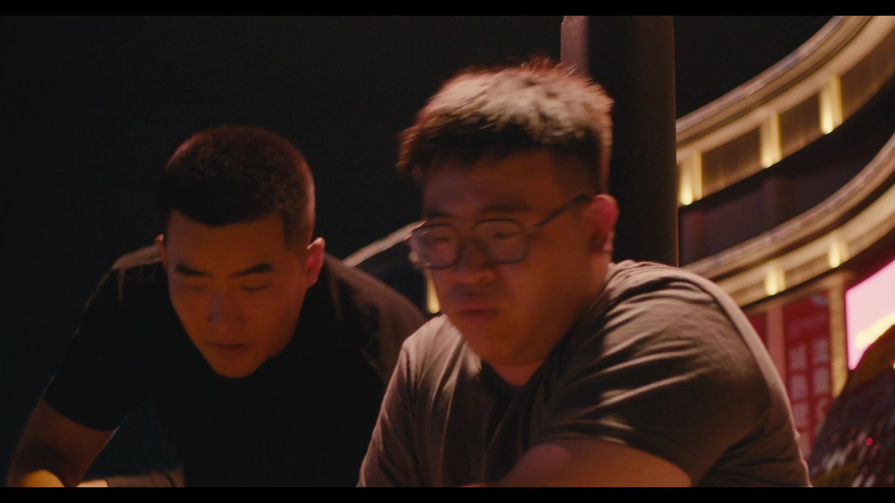

One cut changes the relationship.
CUT AT 05:36:16
ObservationThe cut lands during the rise to standing. The next angle places both characters side by side; a hand on a back becomes visible.
InterpretationThe movement carries the transition, while the new composition suggests closeness. This makes the edit a useful example of action continuity and relational staging.